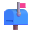

이상과 상상, 그 이상
흥미로운 것을 상상하고 만듭니다.
Creative Developer
유이준(Yoo Yijun)
Faber est suae quisque fortunae.
운명을 만드는 사람은 바로 자신이다.
Appius Claudius Caecus
BC 312~BC 285
Index.
About ME.
유이준 / Yijun Yoo
<Residence/>
Republic of Korea — Daejeon
<School/>
前Daejeon Sahmyook Elementary School
前Daejeon Sahmyook Middle School
現Daejeon Daeshin High School
<Career/>
Developer, Designer, AI Engineer
<Communicate/>
Korean, English, Chinese, Japanese
I think, therefore, I am.
 컴퓨터공학과 및 인공지능학과 지망
컴퓨터공학과 및 인공지능학과 지망
생각나는 것을 만드는 프로그래머입니다.
저 또는 주위에 필요하다고 느끼는 것을 만듭니다.
시각디자인학과 지망
4차원적인 생각들을 그래픽으로 만드는 디자이너입니다.
여러 생각들을 사회친화적으로 디자인합니다.


Practice makes perfect.
창의적인 생각들을 현실로 이뤄내기 위해, 직접 다루며 피나도록 갈고닦았습니다.
Efforts never betray.
노력이 쌓여 만들어진 프로젝트들입니다.
Feel free to contact.
새로운 인연과 대화는 언제나 환영합니다.
여기를 눌러서 저와 소통할 수 있습니다.
